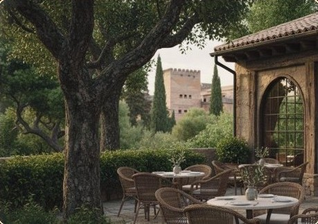

Desde 1890 en la Alhambra dando refrigerios a los caminantes

La Mimbre se redefine como un refugio gastronómico donde la herencia artesanal de Granada y la sofisticación orgánica convergen en un entorno histórico inigualable.
Situado bajo la sombra del Generalife, el restaurante ofrece una experiencia sensorial que celebra la calma y el respeto por el producto local. La nueva propuesta no solo se vive a través del paladar, sino a través de una atmósfera de "lujo relajado" que invita al comensal a desconectar en un espacio donde los materiales naturales, la luz de la Alhambra y la tradición artesana se entrelazan para crear momentos inolvidables en el corazón del patrimonio granadino.
En el año 1890 nacía La Mimbre, negocio que después de cuatro generaciones continúa vivo, en la actualidad es el más antiguo de Granada con 130 años de historia.
La Familia Ballesteros montó un pequeño quiosco de madera sin más pretensiones que saciar la sed a los viajeros y terminó siendo punto de encuentro de artistas y bohemios que trasnochaban al frescor del Bosque Alhambreño.
La familia nació y vivió en las Huertas del Generalife "Fuente Peña", en aquel entonces a finales del siglo XIX, los propietarios eran los "Marqueses de Campotejar"... gracias a las gestiones de un caballero que fue D. Enrique Gómez Colón, propietario de Villa Paulina concedieron levantar un quiosco en su propiedad.
La Mimbre, era un ventorrillo de madera en el camino del cementerio, sin más deseo que atender a los viandantes, al poco tiempo, los asistentes a los entierros realizaban una parada al regreso, en la cual se detenían para tomar una copa y una copla ya lo decía:
"El que va a un entierro y no bebe sino el suyo viene de camino".
Durante esta época fue muy conocido el abuelo, al cual le llamaban "Manolico" o "Manolico de la Mimbre", una persona de ingenio, afable y simpática a manos llenas, le gustaba tertuliar con artistas, bohemios, escritores, políticos, turistas y con los paisanos...